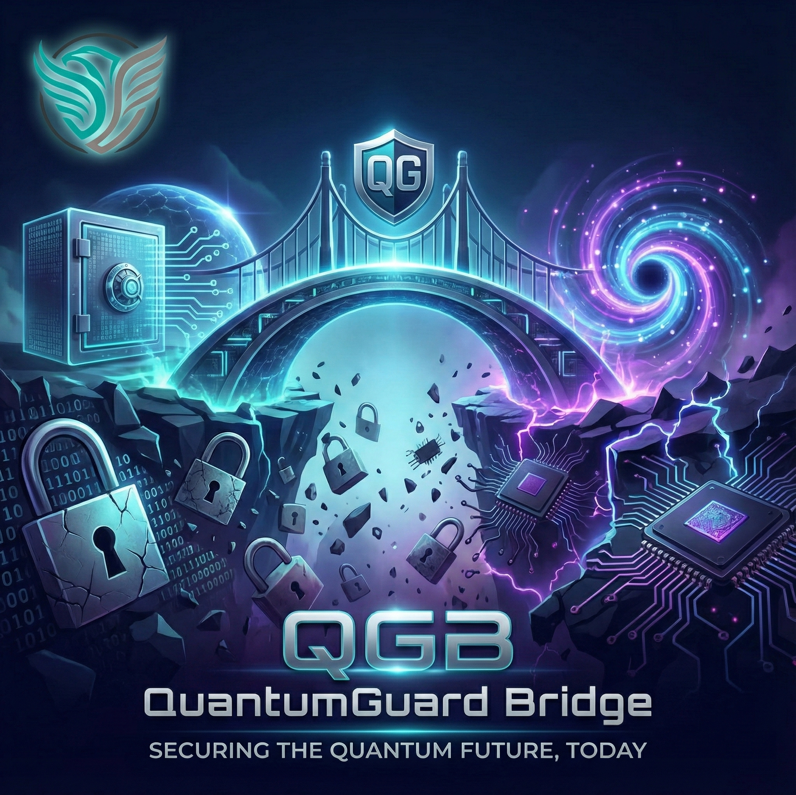

Assess crypto risk clearly and modernize with confidence. Évaluez le risque cryptographique et modernisez avec confiance.
QuantumGuard Bridge helps organizations understand their cryptographic exposure, prioritize remediation, and execute a post-quantum transition with zero operational downtime. QuantumGuard Bridge aide les organisations à comprendre leur exposition cryptographique, prioriser la remédiation et exécuter une transition post-quantique sans temps d'arrêt opérationnel.

Expert Consulting & Solutions
Led by our Founder & Lead Architect, Winner of the Polytechnique Montréal Cybersecurity Competition.
The "Harvest Now, Decrypt Later" Threat La Menace "Récolter Maintenant, Décrypter Plus Tard"
The quantum threat isn't a future problem—it is an active vulnerability. Nation-state actors and advanced persistent threats (APTs) are currently harvesting encrypted, sensitive corporate data. When cryptographically relevant quantum computers mature, standard public-key cryptography (RSA, ECC) will be instantly broken. La menace quantique n'est pas un problème futur, c'est une vulnérabilité active. Les acteurs étatiques et les menaces persistantes (APT) récoltent actuellement des données d'entreprise chiffrées et sensibles. Lorsque les ordinateurs quantiques arriveront à maturité, la cryptographie à clé publique standard (RSA, ECC) sera instantanément brisée.
Traditional, manual cryptographic migrations lead to blind spots, severe operational downtime, and incomplete compliance. You need a deterministic, automated path forward. Les migrations cryptographiques manuelles et traditionnelles entraînent des angles morts, des temps d'arrêt opérationnels sévères et une conformité incomplète. Vous avez besoin d'une voie déterministe et automatisée.
Priority Risk SignalsSignaux de Risque Prioritaires
- Internet-facing crypto exposure:Exposition crypto côté Internet : Legacy TLS/SSH protocols leaving transport layers vulnerable.Protocoles TLS/SSH obsolètes rendant les couches de transport vulnérables.
- Identity and signing trust weakness:Faiblesse de confiance d'identité : Outdated certificates eroding service integrity.Certificats obsolètes érodant l'intégrité des services.
- Secrets and key hygiene drift:Dérive d'hygiène des clés : Undocumented shadow cryptography hidden deep in the network.Cryptographie fantôme non documentée cachée dans le réseau.
The QGB PlatformLa Plateforme QGB
A centralized control plane unifying network, application, and operational technology (OT) intelligence to govern your post-quantum transition. Un plan de contrôle centralisé unifiant l'intelligence du réseau, des applications et de la technologie opérationnelle (OT) pour gouverner votre transition post-quantique.
Cryptographic DiscoveryDécouverte Cryptographique
Agentless, passive monitoring maps your entire cryptographic landscape, detecting shadow crypto with zero latency impact. La surveillance passive et sans agent cartographie l'ensemble de votre paysage cryptographique, détectant la crypto fantôme sans impact sur la latence.
Dynamic CBOMCBOM Dynamique
Automatically generate a Cryptographic Bill of Materials (CBOM) to track dependency mapping and streamline execution-ready planning.Générez automatiquement une nomenclature cryptographique (CBOM) pour suivre le mappage des dépendances et planifier l'exécution.
Remediation RoadmapFeuille de Route
Unlock phased remediation waves, ownership assignment, and compliance documentation for technical and executive stakeholders.Débloquez des vagues de remédiation phasées, l'attribution des responsabilités et la documentation de conformité.
Expert PQC Migration Consulting Conseil Expert en Migration PQC
Technology alone is not enough. Transitioning to Post-Quantum Cryptography requires strategic architectural planning. We offer specialized consulting services to assist your organization in designing and preparing robust migration plans. Our experts will guide you in implementing quantum-safe security across on-premise servers, critical microservices, and hybrid cloud environments to ensure total compliance and zero disruption. La technologie seule ne suffit pas. La transition vers la cryptographie post-quantique nécessite une planification architecturale stratégique. Nous proposons des services de conseil spécialisés pour aider votre organisation à concevoir et préparer des plans de migration robustes. Nos experts vous guideront dans la mise en œuvre d'une sécurité à l'épreuve du quantique sur les serveurs sur site, les microservices critiques et les environnements cloud hybrides.
Schedule a ConsultationPlanifier une ConsultationContact the QGB TeamContactez l'Équipe QGB
Start a conversation about our platform, request a demo, or ask how our consulting team can support your modernization roadmap.Démarrez une conversation sur notre plateforme, demandez une démo, ou découvrez comment notre équipe de conseil peut vous aider.